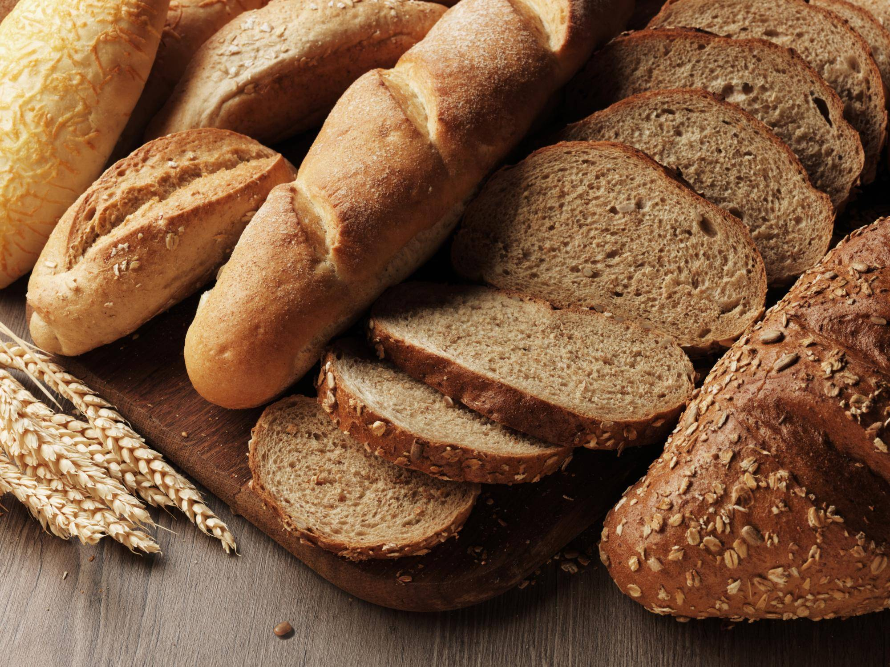

A little about
Our Stuff
Fresh cucumbers
We add only the freshest cucumbers that grew in the garden of Vazgen's grandmother or the nearest neighbors.
Chicken
For Shawarma and other dishes, we use the freshest chicken that ran yesterday at Uncle Vazgen's poultry farm.
Pita

We do not use purchased pita bread or cheap bread we bake our bread ourselves so that you can enjoy the taste.
Sauce
Sauce for hot dishes is prepared on the basis of sour cream sauce and adding a secret ingredient to convey great taste sensations.
Spice
Using our steaks as an example, you can understand that we are adding not simple seasonings, but a combination of several types of peppers and oriental herbs.
Crispy crust

We add a crust to our baked goods so that there is an unusual feeling of crunch mixed with a special taste.